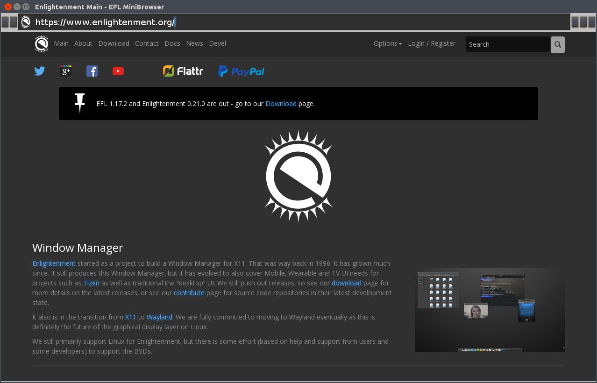

EWebKit stable release
As a part of enlightenment foundation libraries (EFL), EWebKit has supported webview in EFL. Moreover EWebKit has been used by Tizen platform. Now all Tizen products are using EWebKit in order to support web browser and web applications.

Many developers have been contributing to EWebKit project since 2010. You can find EWebKit contributors in WebKit Team